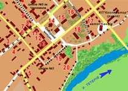
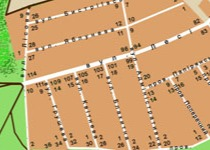
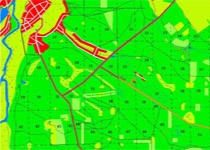
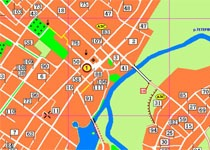

Галерея мап

Мапа Радомишля: Створена 2010 р. Назви вулиць оновлені на 2017 рік. Натисніть, щоб збільшити.

Дачі Радомишля: Мапа створена 2010 р. Натисніть, щоб збільшити.

Мапа лісу біля Радомишля: Створена 1996 року. Відтворена в цифровому форматі 2006 року. Натисніть, щоб збільшити.

Мапа Радомишля: Створена 1996 року. Відтворена в цифровому форматі 2006 року. Натисніть, щоб збільшити.
Мапа сайту
- Головна
- Доісторичні часи Радомишля
- Будівлі Радомисльського замка
- Брама Радомисльського замка
- Реконструкція резиденції греко-католицьких митрополитів у Радомислі
- Радомисль та околиці на топографічній карті 1868 року
- З Книги інвентарів митрополичої єпархії уніатської церкви. 1774 рік
- Із рапорту Радомисльського городничого Круглова Київському військовому губернатору від 18 квітня 1803 р.
- З опису Радомисля та повіту, виконаного у 1805 р. губернським землеміром Масловським
- Локаційна грамота короля Стефана Баторія києво-печерському архімандриту Мелетію Хребтовичу на заснування замку і міста [Радомишля] 1579 р.
- Світлини
- Мапи
- Історія створення карт
- Повна база статей на сайті «Радомишль — наш дім»